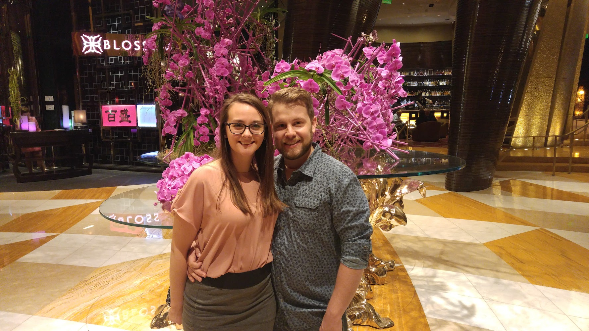

Once upon a time, there was a girl who loved all the music and a boy who loved none (except Snoop and Die Antwoord, of course). She had always imagined the man of her dreams to fit the rule of three: he would love Prince, Tom Petty, and Was (Not Was). It turns out the universe knew what she needed most was a man who always allowed her to play DJ.
They met in 2013 at a bar called Uncle Fatty’s. It was spring, and a cover band in marching band uniforms were playing. She spotted him on the dance floor sporting a light blue plaid sports coat. It was the era of Macklemore’s “Thrift Shop,” one of her favorite songs. This led to an instant connection from across the floor. They spoke numerous times that night; however, she was guarded. He was a gentleman and paid for her cab home to ensure she was safe. Smooth, though, he was not…he noted he would be asking her on a date but not to fret, that he would wait a week to call her. And yet, she received texts daily until they met up the next weekend. Their first date was at a Michigan State bar, which was serendipitous as she is a diehard Spartan. He took her to a Michelin star restaurant, and she ended the night to go see Jurassic Park with a friend. This was another serendipitous moment as Jurassic Park is Andy’s favorite movie (seriously. Just listen to his ringtone.)
From there, it was a blur of pizza nights, music festivals, dancing in Rock N Roll heaven, introductions to their beloved friends…but no one can forget the first moment when it *clicked* after they both made a behind-the-back shot into the cup during a beer pong game. Truly unheard of.
It was after their first Thanksgiving together they said “I love you.” He supported her emotionally as she finished graduate school and ventured to find herself in the professional world. Likewise, she has offered unconditional support in his endeavor to reprioritize his professional goals.
In 2015 they moved in together into an apartment in Edgewater, Chicago. It was close to the beach for her, and to Jerry’s whiskey bar…also for her. They quickly adopted two cats, and a year later a dog. They have grown together over travels to Florida, California, Las Vegas, Mackinac Island, and Mexico. In 2018, they plunged into a move to the suburbs. They have worked to make their apartments a home for them and the animals. She loves to cook for him. They spend time watching Marvel movies, going to the dog park, working on their bowling technique, and playing board games.
Around the holidays in 2017, Andy and Ashley realized they were ready to further venture into commitment to each other and voiced their wishes to spend the rest of their lives together. Andy began working with his mother and a local jeweler to design a unique ring. He attempted to propose three times in July, but his plans were always thwarted by Ashley making plans elsewhere. At last, though, the day came where he asked Ashley to be his partner in life. If you ask her, she knew it was happening the entire day. “He’s not sneaky”, she says. “He asked if we could go to dinner that night but would not share where, and insisted he bring his satchel because his ‘pants were too tight’ to hold his keys. This didn’t make since considering I always carry a purse…” alas, they began their night at Shaw’s Crab House, their go-to spot for fancy surf ‘n’ turf and Old Fashioned’s. Now, many of you know Ashley, and will not be surprised that as soon as Andy began to get down on one knee, she pulled him into the booth instead. “I wanted it to be intimate, not shared with the rest of the room.” What was said between them is essentially a blur, other than “YES!!”, but the emotions shared are what’s remembered by both.